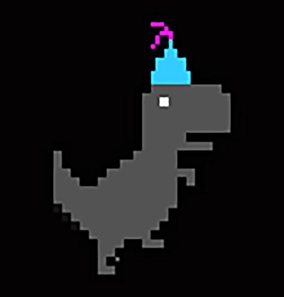

大数据开发者
爱技术，爱钻研！
语言技术栈 编程之路
12年接触 java , 14年接触 python,15年接触 scala ...
大数据技能 技术驱动价值
Hadoop 生态 、Spark 生态、SQL 、机器学习、统计学。
挖掘价值 业务为首要，计算为核心
在海量的数据中翱翔，一切都是为了无法计算的价值。
Open source
Chart.js is a community maintained project, contributions welcome!
8 Chart types
Visualize your data in 8 different ways; each of them animated and customisable.
HTML5 Canvas
Great rendering performance across all modern browsers (IE9+).

Responsive
Redraws charts on window resize for perfect scale granularity.
Spark
70%/p>
Hive
80%
HTML5 Canvas
Great rendering performance across all modern browsers (IE9+).
Responsive
Redraws charts on window resize for perfect scale granularity.